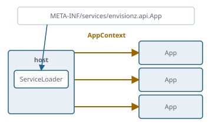

The contract between host and app
Function overview for the presentation of the envisionz framework, as of 28 Sep 2026. The smallest module and the one with the widest reach:
the interface every app implements, the context the host hands to it, the saved session state, event bus and service registry,
plus the hardened XML factory and an axis interface for charts.
For each building block: purpose, API, use in the framework, applications, examples. The examples are shortened.
Some API names are German (e.g. SichereXml = safe XML, domLeser = DOM reader, EinstellungZeigenEvent = show-settings event, Dateibetrachter = file viewer); they are shown unchanged.

App, all 21 app modulesPrinciples of the module
AppContext of the framework, never a host class and no static singleton. Whoever implements the context (multi-app host, standalone launcher, probe) decides what the app can do.META-INF/services/envisionz.api.App per app; the constructor takes no parameters and builds neither UI nor I/O.AppDescriptor.fileExtensions is taken over with List.copyOf; otherwise an app could change the host menu afterwards. PersistableState.tabs(), by contrast, stays the live list the host fills while loading.LinkedHashMap; the order ends up in the XML file, and two saved states can be compared.AppDescriptor changes every app at once, and the break only shows when the finished program starts.The app contract envisionz.api
Every app is a self-contained module that the framework shows as a tab or a standalone launcher runs as the only application. One instance stands for one open tab, not for the app type. Background, formulas and pseudocode →
App, AppView, AppDescriptor – life cycle and metadata
Life cycle: constructor (fields only), descriptor() at discovery, createView(ctx) builds the UI, captureState() before saving, restoreState(tab) after loading, dispose() on close. AppView separates the Swing component from the contract. AppDescriptor is a record with id, display name, menu label, icon, file extensions (lower case, no dot) and accelerator; name and menu label are translated from envisionz/api/apps.properties or apps_en.properties, otherwise the descriptor's text applies.
Methods
App:descriptor(),createView(AppContext),captureState(),restoreState(PersistableTab),dispose()AppView:component(); with defaultsonShown(),canClose()(veto on close)new AppDescriptor(id, displayName, menuLabel, iconResource, fileExtensions, acceleratorKey)
Used in
What for
Plug in new tools without touching the framework; the same app in the multi-app program and as a standalone program. canClose() is used by acft, learn, machieve and matrix, onShown() by acft, chiffre, hello and matrix.
Example – a complete, minimal app (illustrative)
public final class BeispielApp implements App {
private static final AppDescriptor D = new AppDescriptor(
"beispiel", "Beispiel", "Beispiel öffnen …", null, List.of("csv"), null);
public BeispielApp() { } // for the ServiceLoader: no Swing, no IO
@Override public AppDescriptor descriptor() { return D; }
@Override public AppView createView(AppContext ctx) { JPanel p = new JPanel(); return () -> p; }
@Override public PersistableTab captureState() { return new PersistableTab(D.id(), "Beispiel"); }
@Override public void restoreState(PersistableTab state) { }
@Override public void dispose() { }
}
// plus: src/META-INF/services/envisionz.api.App containing the class nameAppContext – everything an app gets from the framework
The host passes the context in createView. Logging, event bus, service registry, a working directory per instance (created by the host and cleaned up on close), tab title and closing itself.
Methods
logger(),eventBus(),services()workDirectory()→PathsetTitle(String)(null= name from the descriptor),closeTab()
Used in
What for
File name in the tab title, logging without System.out, scratch files that disappear with the tab.
Example – title and logging
ctx.setTitle(datei.getFileName().toString());
ctx.logger().forClass(getClass()).info("geladen: " + datei);Saved session state envisionz.api.persistence
PersistableState, PersistableTab, PersistableTab.Section
Pure data carriers without logic. PersistableState is the root (format version CURRENT_VERSION = "1.0", ISO save time, list of tabs, visible tab). A PersistableTab carries flat properties and named sections; a section has its own properties and repeated items. section(name) returns the same section on the second call. Writing and reading happen in framework-core. Background, formulas and pseudocode →
Methods
new PersistableTab(appId, title),set(key, value),get(key, default),section(name),properties(),sections()Section:set,get,addItem()→Map<String,String>,items()PersistableState:version(),savedAt(),tabs(),activeTabIndex()with setters
Used in
What for
Save a workspace with all open tabs and reopen it on another machine (framework-core stores paths under path:… relative to the file).
Example – capture and restore the state of a tab
PersistableTab t = new PersistableTab(descriptor().id(), "motor.cas");
t.set("path:datei", datei.toString()); // "path:" → saved relative to the XML file
t.section("solverOptions").set("maxIter", "50");
t.section("regions").addItem().put("name", "Einlauf");
// in restoreState(state):
String pfad = state.get("path:datei", null);Events between apps envisionz.api.events
EventBus, FocusAppEvent, EinstellungZeigenEvent
Synchronous bus for loose coupling: listeners run on the publishing thread, in order of subscription; the concrete type of the event determines the receivers. FocusAppEvent(appId) asks the host to bring an app to the front or open it, synchronously on the EDT, so that a following data event already reaches the fresh instance. EinstellungZeigenEvent(bereich) makes the settings app show a section without the framework knowing the app.
Methods
publish(E event),subscribe(Class<E>, Consumer<E>)→SubscriptionSubscription.unsubscribe()– harmless when repeated, typically indispose()record FocusAppEvent(String appId),record EinstellungZeigenEvent(String bereich)(section)
Used in
What for
Hand data from EPDS or the HDF5 reader to Charts and Maps without the apps knowing each other; open settings and "About N-VISIONZ" from the menu.
Example – hand a table to Charts (as in app-epds)
ctx.eventBus().publish(new FocusAppEvent("charts")); // receiver to the front first
ctx.eventBus().publish(new TableAvailableEvent(tabelle, "EPDS: …", "charts")); // then the data (framework-data)Example – subscribe and unsubscribe
EventBus.Subscription s = ctx.eventBus().subscribe(TableAvailableEvent.class, e -> zeige(e.table()));
// in dispose():
s.unsubscribe();Services and logging envisionz.api.services · envisionz.api.logging
ServiceRegistry – services by type, not by app
One app registers an implementation under an interface, another asks for it. If nothing is registered, get returns an empty Optional: not an error, but information.
Methods
register(Class<T>, T)– replaces an earlier registrationget(Class<T>)→Optional<T>,unregister(Class<T>)
Used in
What for
Show a file from the HDF5 reader's catalogue in the hex viewer of the file analysis, without an app-to-app dependency.
Example – as in app-hdf5reader
Optional<Dateibetrachter> dienst = ctx.services().get(Dateibetrachter.class); // interface from framework-core
if (dienst.isEmpty()) { status.setText("Hex-Betrachter nicht geöffnet"); return; }
dienst.get().zeige(datei);FrameworkLogger – a narrow log
Six level methods and sub-loggers. The rule that goes with it: no System.out.println in app or framework code; diagnostics go through the log the host sets up (console and file with rotation).
Methods
trace,debug,info,warn,error(msg),error(msg, Throwable)forClass(Class),forName(String)
Used in
What for
Debugging the EXE without a console window; the messages also reach the log console of the main window.
Hardened XML readers envisionz.api.xml
SichereXml – the one place where XML factories are created
DOCTYPE forbidden; external entities, DTD, schema and XInclude off; secure processing on. That closes both attacks at once: pulling in foreign files via <!ENTITY … SYSTEM> and the "billion laughs" of nested entities. The workspace's own files carry no DOCTYPE declaration and lose nothing. Background, formulas and pseudocode →
Methods
domFabrik()(DOM factory) →DocumentBuilderFactorydomLeser()(DOM reader) →DocumentBuilderstaxFabrik()(StAX factory) →XMLInputFactory
Used in
What for
Open chart definitions and settings files that someone passed on, without them being able to read files on the recipient's machine.
Example
Document doc = SichereXml.domLeser().parse(datei.toFile());Axis with rotated labels envisionz.api.chart
AngledTickAxis – a capability of a value axis
Angle of the tick labels from 0 to 90 degrees (clamped outside), anchor point of the text ("AUTO" or a name such as "TOP_RIGHT") and gap of the axis title above the rotated numbers. The interface itself is free of JFreeChart, so the option cards in framework-swing can drive it without depending on framework-chart.
Methods
setLabelAngleDeg(double),getLabelAngleDeg()setLabelAnchorCode(String),getLabelAnchorCode()setLabelGap(double),getLabelGap()
Used in
What for
Slant long tick labels without the axis title running into them.
Example
if (plot.getDomainAxis() instanceof AngledTickAxis a) { a.setLabelAngleDeg(45); a.setLabelAnchorCode("AUTO"); }Usage matrix in the framework
Which apps use which building blocks today, counted in the source code (excluding probes). All 21 apps use the app contract and the session state; the table shows who additionally uses context services and extra building blocks.
| Module | App contract, session | Logging | Event bus | FocusAppEvent | Service registry | SichereXml | Angled axis | What for |
|---|---|---|---|---|---|---|---|---|
| app-acft | ● | ● | ● | ● | data import settings, axis options | |||
| app-charts | ● | ● | ● | ● | ● | receive tables, read chart files | ||
| app-epds | ● | ● | ● | ● | hand-over to charts and maps | |||
| app-hdf5reader | ● | ● | ● | ● | publish a table, ask for the hex viewer | |||
| app-fileanalysis | ● | ● | ● | register the file viewer | ||||
| app-maps | ● | ● | ● | receive tables and surrogate models, read bindings | ||||
| app-matrix | ● | ● | ● | ● | open apps from the overview | |||
| app-neural | ● | ● | ● | ● | publish a surrogate model | |||
| app-settings | ● | ● | show a section on request | |||||
| 12 further apps | ● | ● | chiffre, digitizer, eqnparser, hello, learn, machieve, pdfdigitizer, relief, report, stats, thermo (logging); forensik without logging | |||||
| framework-core | ● | ● | ● | ● | default implementations | |||
| framework-swing | ● | ● | ● | ● | ● | ● | host, menu, option cards | |
| framework-chart | ● | ● | AngledNumberAxis, envelope XML |
EventBus, ServiceRegistry and FrameworkLogger have their only implementation in framework-core; they are tested where they are implemented. tools/Deskriptorabgleich.java checks the descriptors of all apps against each other (duplicate id, duplicate accelerator, duplicate icon, form of the extensions).